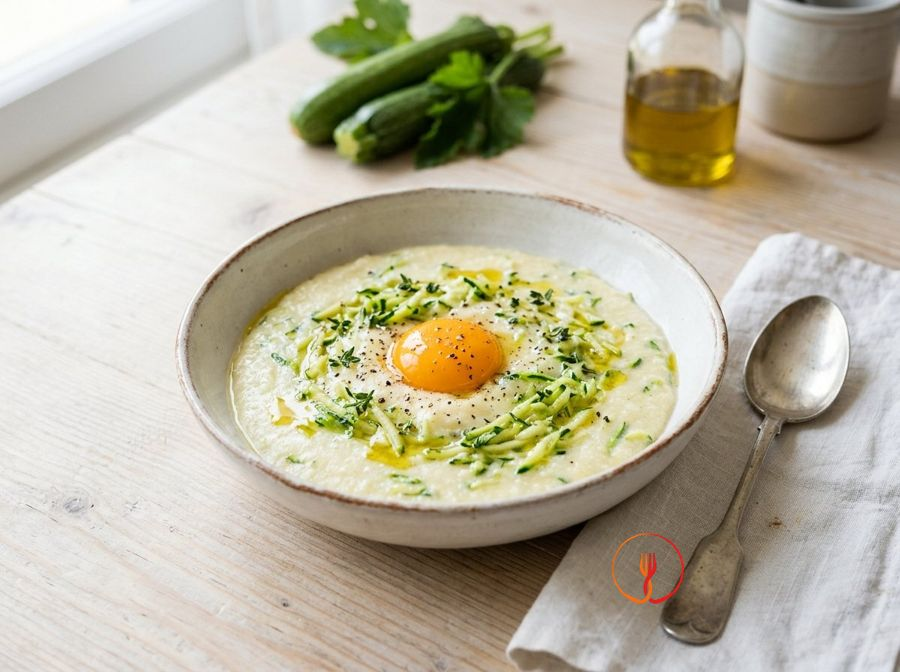

Milky Semolina Cream with Courgettes and Egg Yolk
A childhood classic, nutritious and balanced. Semolina cooked in milk is velvety, and courgettes add freshness.
Ingredients
- Wheat semolina80 g
- Whole milk250 ml
- Water250 ml
- Medium light-coloured courgettes2 pc
- Fresh egg yolks2 pc
- Extra virgin olive oil10 ml
Allergens
Gluten, Milk, Eggs
Method
- Grate the courgettes using a coarse grater.
- In a small saucepan, combine the courgettes, milk, and water and bring almost to the boil.
- Rain in the semolina while whisking constantly to avoid lumps.
- Cook over a very low heat for about 5-7 minutes until the cream thickens.
- Turn off the heat and let it cool slightly for a minute.
- Add the egg yolks, stirring vigorously: the heat from the semolina will cook them gently, making the cream yellow and silky.
- Drizzle in the extra virgin olive oil.
- Distribute into bowls and allow to reach room temperature.
- The dish should be a soft mash; if too thick, add a tablespoon of warm milk.
Nutrition facts (estimate)
| Per serving (175 g) | Per 100 g | |
|---|---|---|
| Energy | 795 kJ / 190.0 kcal | 454.3 kJ / 108.6 kcal |
| Protein | 9.0 g | 5.1 g |
| Carbohydrates | 20.0 g | 11.4 g |
| of which sugars | – g | – g |
| Fat | 8.0 g | 4.6 g |
| of which saturates | – g | – g |
| Fibre | – g | – g |
| Salt | – g | – g |
AI estimates based on average CREA / USDA data: indicative only, not a substitute for medical or dietitian advice.
Open the recipe in the app for the shopping list, ingredient sheets and nearby shops.